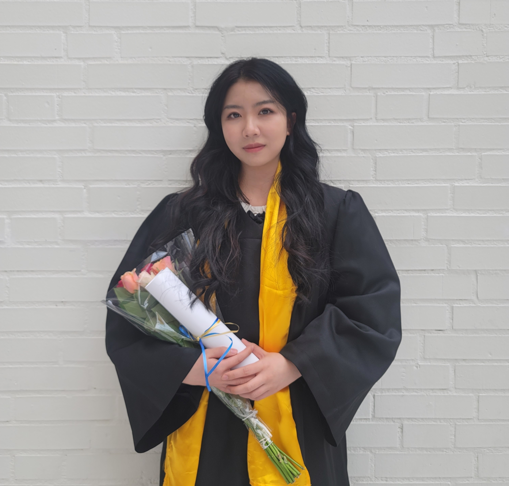

罗怡文
2019.08 - 2022.06 期间就读于瑞典 - Jönköping University(延雪平大学) 的新媒体设计专业。
主修课程:
平面设计，网页和用户界面设计，信息架构，交互设计，前端编程，用户研究，项目管理等。
专业技能:
精通设计软件：XD，Sketch，Axure，Figma，Photoshop, Illustrator，After Effects，Premiere Pro，InDesign等；
熟练应用Html 5、Css、JavaScript等前端WEB技术进行网站的开发与设计；
熟练使用C#和Umbraco进行网站构建，包括SQL数据库和CMS的使用；
熟练操作office办公软件。

资质背景：
有10+次UI/UX设计项目经历，擅长手机App/网页界面设计和产品开发，品牌宣传创意设计，UI界面实现，熟悉整体风格及形象规划设计、页面布局、操作流程优化及视觉美观效果提升的技巧，掌握交互设计技术规范。
专业能力：
优秀的视觉表达执行能力，较好的审美观念及色彩搭配能力，擅长把创意概念转化为有视觉冲击力的美术作品，对视觉设计相关的流行趋势有敏锐的触觉和领悟能力，擅长高质量内容输出，追求完美。
熟练使用C#和Umbraco进行网站构建，包括SQL数据库和CMS的使用；
思维能力：
拥有前瞻的思维方式与资源整合的思维模式，适应多元文化，能够突破固有思维快速挖掘。产品有效信息，具备极度敏锐的运营洞察力与商业价值转化思维。
实习经历
2021.03 - 2021.11 | 爱奇艺/人力资源 - 信息化HRIS | UI/UX设计师
产品开发：
独立完成爱奇艺业务全景平台“奇珍”的界面及icon。独立完成爱奇艺“业务辞典”的界面呈现及交互设计。参与“团队管理⼯作台”UI/UX的设计与开发。
动图设计：
结合爱奇艺kiwi的品牌形象，独⽴完成校园招聘⾸页客服gif动图的设计制作。
需求分析：
负责与项目发起人沟通，就四个维度展开分析：用户群、使用场景、用户痛点、疑难问题，根据需求分析结果绘制流程图和交互原型。
竞品分析：
针对团队管理工作台展开竞品分析，深度洞察用户数据，数据驱动业务。
设计优化：
在爱奇艺业务辞典开发后期，同程序员沟通设计细节，进行测试发现bug，整理文档，核实修改并优化设计方案。根据prd对offer审批流程和入职管理界面进行原型图绘制。
业绩亮点：
爱奇艺内部业务全景平台“奇珍”网站上线前三天访问量4600次+。
项目经历
2019.08 - 2022.06 在校期间 | 实践经历 | 平面 / UI / UX设计
UI/UX设计：
多次在小组项目中负责平面设计，使用ID进行杂志排版、使用AI进行插画和logo设计、使用XD、figma进行手机App和网页设计，完成作品30项+，其中杂志设计参与学校优秀作品展览并获得好评。
报告撰写：
参与工业项目案例分析，使用项目管理模型撰写分析报告、风险分析报告。参与校园创业项目，负责撰写项目计划书、制作产品展示视频，并取得5分的优异成绩。
内容运营：
曾负责学校微博运营维护工作，撰写文案30篇+，拍摄并剪辑视频10个+。